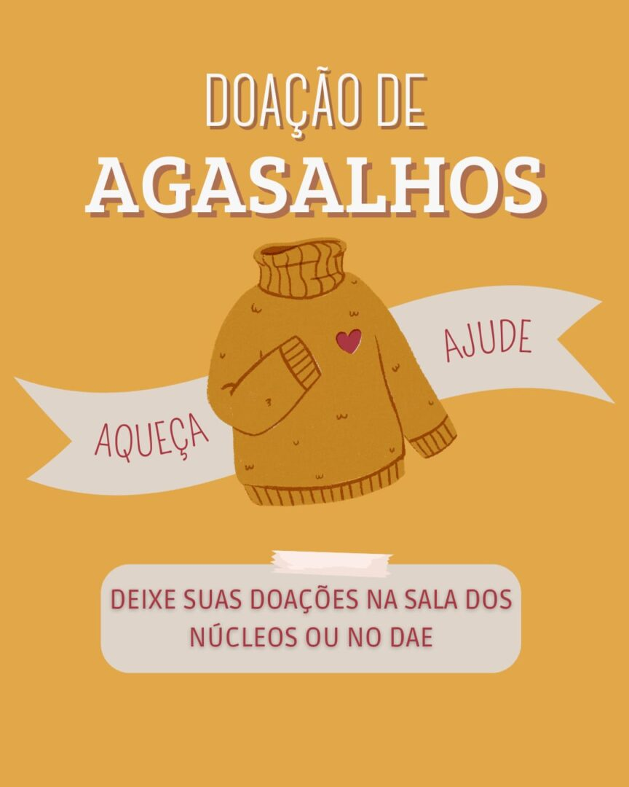
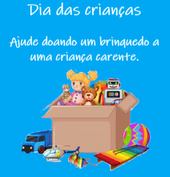

Impacto
|  |
RS recebe casacos da campanha 25! 10 de Setembro Faça parte desse movimento de cooperação e solidariedade. Juntos pelo Rio Grande do Sul. "Quando cada um faz um pouco, o pouco de muitos se soma."
|
|  |
Ajude na doação de brinquedos para crianças carentes. 12 de Outubro Doe um brinquedo e coloque um sorriso no rosto de uma criança! |